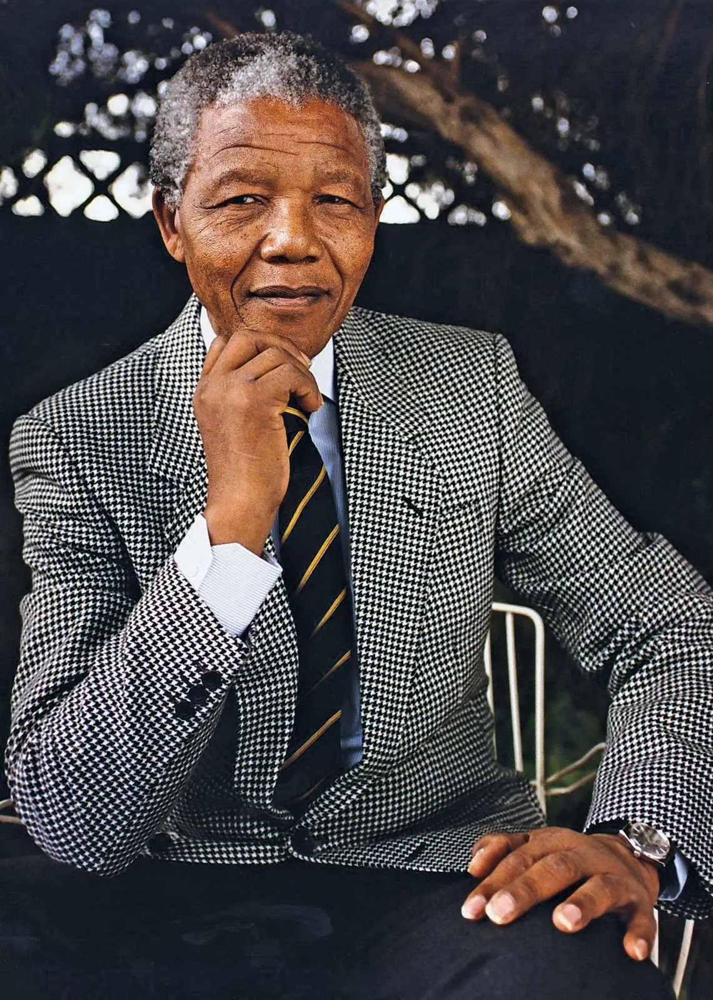

Early Life and Education
Nelson Rolilhala Mandela was born on July 18, 1918 inthe Eastern Cape, Southern Africa. He was left fatherless at the age of 12.
- University Education: University of Fort Hare, University of Witwaterstrand - B.A Law
- Primary and Secondary Education: Clarkebury Boarding Institute, Healdtown Secondary School
Marriage and Family
He married thrice. First to Evelyn Mase whom he had four children together with. Second to Winnie Madikizela who he divorced in 1996 with two daughters. The third marriage was to Graca Machel in 1998 and lasted until his death in 2013.

Employment History
- Law clerk at a law firm after campus - Johannesburg
- Established law firm with Oliver Tambo, 1952
- Joined Africa National Congress (ANC)
- President of South Africa - 1994 to 1999
Imprisonment
He was tried and imprisoned for 27 years majorly at Robben Island after The 1956 Treason Trial.
Death
Mandela died on 5th December 2013 in Houghton Estate, Johannesburg, South Africa at the age of 95 years.